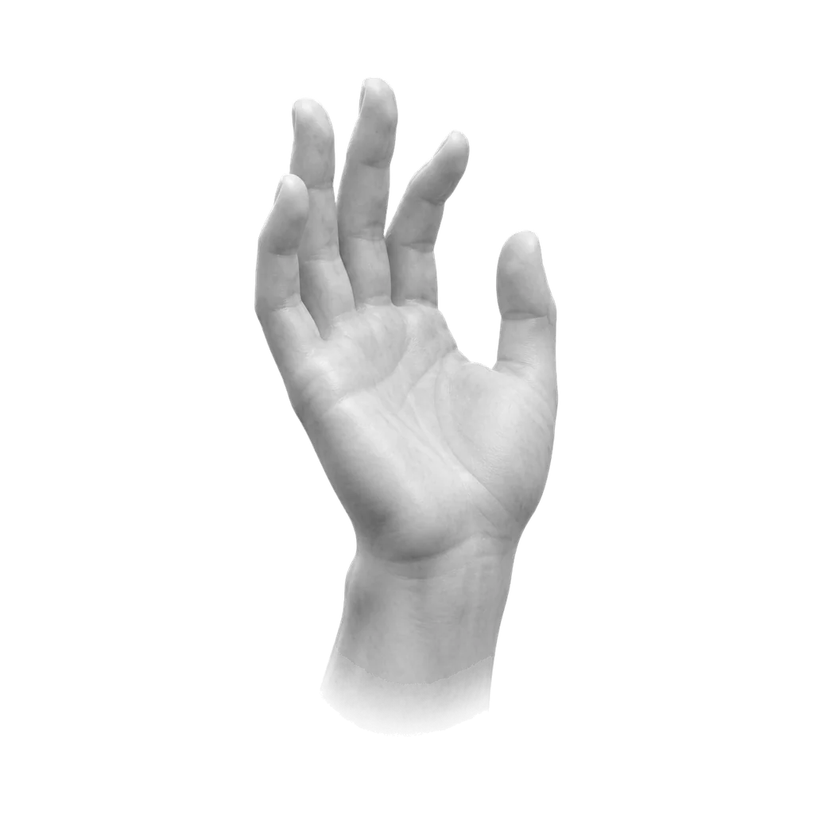

Free & open source · Local Whisper · MIT
Press a hotkey. Say what you mean. Your words appear in whatever window has focus — transcribed on your hardware, in your language, with your vocabulary. No cloud. No subscription. Nothing leaves the machine.
Linux · GNOME on Wayland — native. Windows 10/11 — beta. More on the way.
While you speak, a quiet card shows what the model hears — it never steals focus from your work. Release the key, and a final full-context pass lands the text at your cursor.
A faithful replica of the on-screen preview.
Anywhere a cursor blinks, voiceflow writes. The same hotkey, every application.
Draft three replies in the time typing one used to take.
Slack, WhatsApp, Discord — answer at the speed of speech.
Born in a terminal: the author dictates prompts to coding agents all day.
Reports, essays, meeting notes — flow first, polish later.
Ideas evaporate faster than you can type. Not faster than you speak.
On Discord, your mic is muted to the call and the call is turned down — they never hear your prompts.
Every other dictation tool ships your voice to a server and bills you monthly for the privilege. voiceflow keeps the entire pipeline on your machine: the model, the audio, the history, the vocabulary.
That is not a feature toggle — it is the architecture. The only network call in the codebase is an optional, once-a-day update check.
A user daemon keeps Whisper large-v3-turbo loaded, so text lands the moment you stop speaking. No GPU? Automatic CPU fallback — slower, equally private.
The on-screen card is engineered so no compositor can hand it focus — the pasted text always goes where you were working.
Dictating mid-call mutes your mic stream to the call and ducks its volume; both are restored the instant recording ends. Your manual mute is respected.
Product names and jargon are biased into the decoder — it stops mangling them, and it never rewrites what you actually said.
Pasted into the wrong window? voiceflow last --copy recovers it. Words per day, charts, an activity calendar.
Text is injected via paste — the only path that survives every alphabet — and your previous clipboard is put back afterwards.
| voiceflow | typical paid dictation app | |
|---|---|---|
| price | free, MIT | ~$15/month |
| audio leaves your machine | never | always |
| Linux / GNOME / Wayland | native | unsupported |
| latency after you stop speaking | ~0.1 s on a GPU | network round-trip |
| works offline | yes | no |
| source code | all of it, on GitHub | closed |
Environment, hotkey, background service — and the speech model, downloaded with a visible progress bar as the final step. When the installer says done, dictation works. Updating later? The same command again.
One step asks for sudo (input tooling and a udev rule — the script explains why). Then press Super + G, speak, press it again.
Prefer to read it first? View install.sh on GitHub.
Works in PowerShell and cmd, from any directory. Then press Ctrl + Shift + Space, speak, press it again.
No terminal? A double-clickable installer:
voiceflow-install.batRequirements, details and honest limitations: README · Windows notes · all releases

Good dictation should not cost fifteen dollars a month, nor require shipping your voice to a stranger's server.
voiceflow stays free and open source on every platform we can reach. The issues above carry implementation notes — grab one and go.